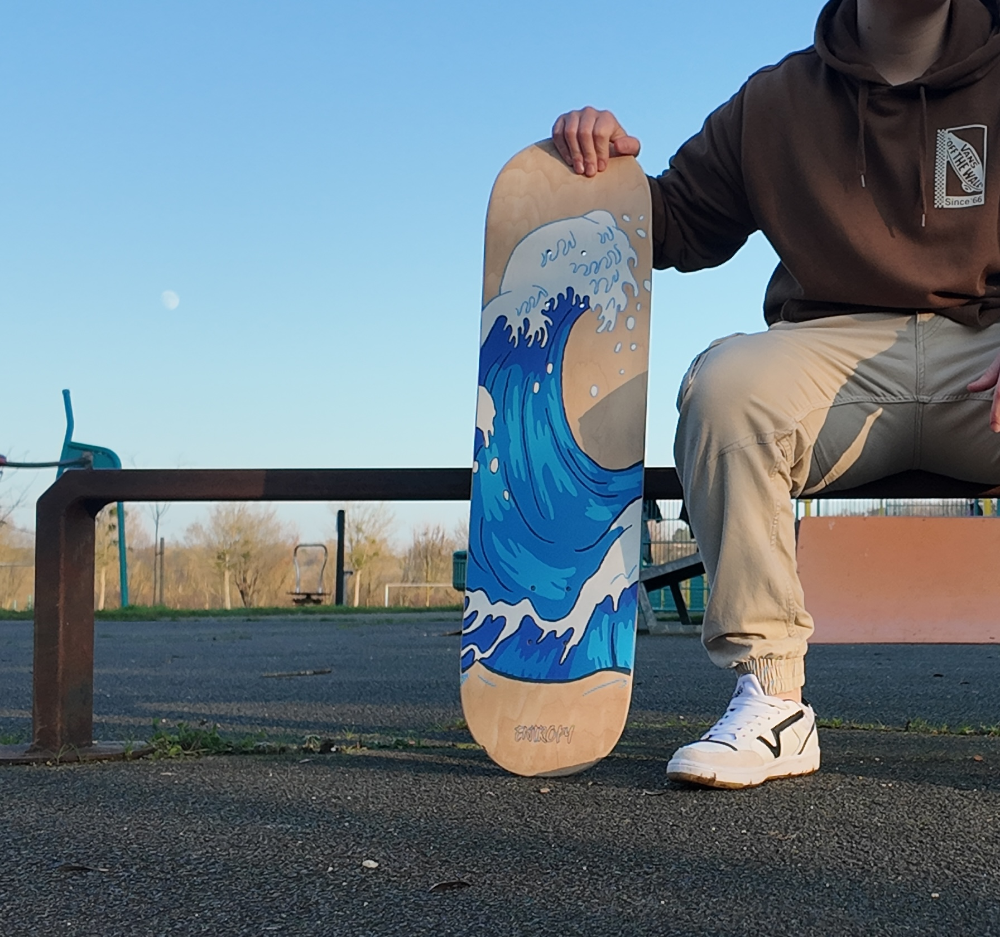
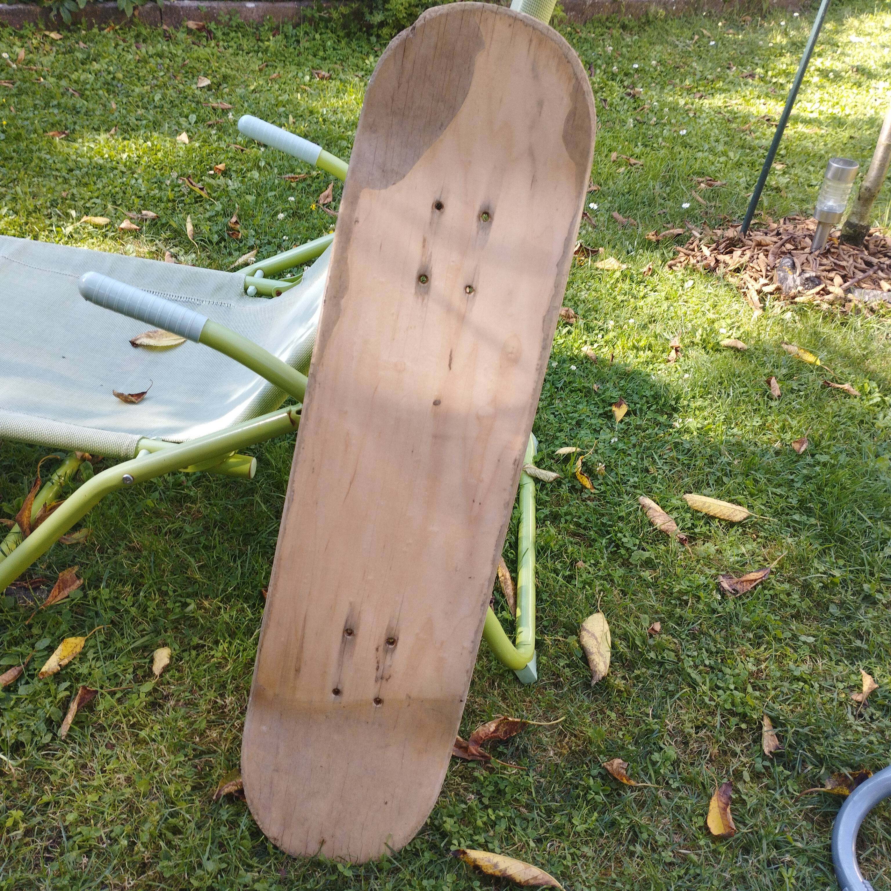
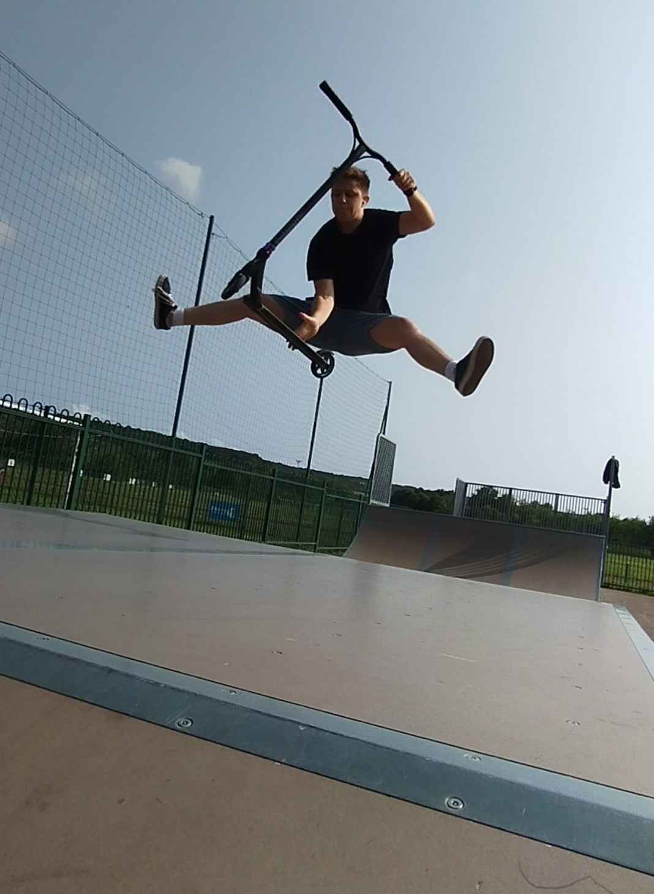

Des skateboards uniques,
faits à la main
Chaque planche est une seconde vie.
Bois recyclé, design original, identité forte.
Pourquoi EntropyBoards ?
♻️ Recyclage
🎨 Artisanat
🧠 Identité
Présentation du concept

EntropyBoards est né de l’envie de donner une seconde vie à des planches de skateboard ayant déjà bien vécu. La plupart du temps, je récupère des boards usagées, parfois en mauvais état, marquées par le temps.

Chaque planche est d’abord analysée : selon la qualité du bois et son état général, elle sera soit restaurée pour un usage décoratif, soit remise en état pour pouvoir rouler à nouveau.

Les designs sont toujours réfléchis en amont, en fonction de l’univers que je souhaite donner à la planche :
inspiration artistique, thématique, émotion ou message.
Vous pouvez voir quelques exemples de mes premiers customs,
qui servent aujourd’hui principalement de pièces décoratives. D'autrs custom sont visibles dans l'onglet "Mes Customs".

EntropyBoards est avant tout une histoire de passion. Bien qu'ayant pratiqué majoritairement la trottinette freestyle et le roller, le monde de la ride m’a toujours attiré. C'est pourquoi j'essaie aujourd'hui de rester impliqué, de près comme de loin, dans cet univers.